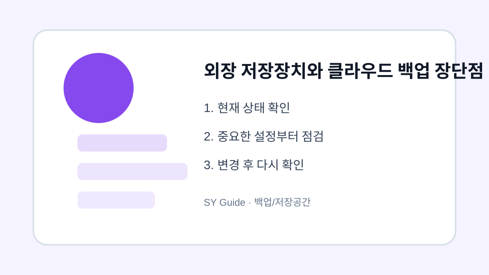

외장 저장장치와 클라우드 백업 장단점 비교
외장하드, USB, 클라우드 백업의 장단점을 비교하고 중요한 파일을 안전하게 보관하는 기준을 정리합니다.

중요한 사진과 문서를 보관할 때 외장 저장장치와 클라우드 중 하나만 고르기보다 역할을 나누는 것이 안전합니다. 외장하드는 대용량 보관에 좋고, 클라우드는 자동 동기화와 접근성이 좋습니다. 각각의 약점을 이해해야 자료 손실을 줄일 수 있습니다.
외장 저장장치
외장하드나 USB는 한 번 구매하면 추가 요금 없이 큰 용량을 보관할 수 있습니다. 하지만 고장, 분실, 충격에 약하고 직접 연결해야 합니다. 오래 보관할 자료는 한 장치에만 두지 않는 것이 좋습니다.
클라우드 백업
클라우드는 자동 백업과 여러 기기 접근이 편리합니다. 다만 계정 보안과 저장공간 요금이 중요합니다. 비밀번호와 2단계 인증을 제대로 관리하지 않으면 자료 노출 위험이 생길 수 있습니다.
| 방식 | 장점 | 주의점 |
|---|---|---|
| 외장하드 | 대용량 보관 | 고장과 분실 |
| USB | 휴대 간편 | 분실 쉬움 |
| 클라우드 | 자동 백업 | 계정 보안 필요 |
삭제하거나 옮기기 전 마지막 확인
- 중요 파일은 두 곳 이상에 보관하기
- 외장 저장장치는 정기적으로 열어보기
- 클라우드 계정 2단계 인증 켜기
- 삭제 동기화 영향을 확인하기
- 가족 사진은 원본 보관 위치를 정해두기
백업의 핵심은 한 곳에만 의존하지 않는 것입니다. 자동 백업과 별도 보관을 함께 쓰면 실수와 고장에 더 잘 대비할 수 있습니다.
외장 저장장치와 클라우드를 고를 상황
사진이나 문서가 많아지면 외장 저장장치와 클라우드 중 무엇을 쓸지 고민하게 됩니다. 인터넷 연결, 가족 공유, 장기 보관, 분실 위험을 기준으로 나누면 내 사용 방식에 맞는 백업 방법을 고르기 쉽습니다.
백업 방식 선택에서 흔한 실수
한 곳에만 보관하면 기기 고장이나 계정 문제에 취약합니다. 중요한 자료는 외장 저장장치와 클라우드 중 최소 두 위치에 나눠두고, 가끔 실제로 열리는지 확인해야 합니다.
외장 저장장치와 클라우드 백업 장 관련 설정을 먼저 확인해야 하는 이유
외장 저장장치와 클라우드 백업 장 관련 설정은 단순히 메뉴 하나를 켜고 끄는 문제가 아니라, 실제 사용 흐름에서 어떤 불편을 줄이려는지 먼저 정해야 합니다. 같은 메뉴라도 기기 제조사, 운영체제 버전, 앱 업데이트 상태에 따라 이름이 달라질 수 있으므로 현재 화면을 기준으로 차근차근 확인하는 것이 좋습니다.
외장 저장장치와 클라우드 백업 장에서 자주 생기는 실수
외장 저장장치와 클라우드를 고를 상황을 정리할 때는 되돌리기 어려운 삭제나 계정 변경을 마지막 단계로 미루는 것이 좋습니다. 먼저 표시, 알림, 권한처럼 쉽게 복구할 수 있는 항목부터 확인하면 실수 부담을 줄일 수 있습니다.
외장 저장장치와 클라우드 백업 장 점검 후 다시 볼 부분
외장 저장장치와 클라우드를 고를 상황은 사용자마다 필요한 범위가 다르기 때문에, 자주 쓰는 앱과 계정부터 적용하는 편이 좋습니다. 바꾸기 전 화면과 바꾼 뒤 결과를 비교하면 어떤 설정이 실제로 도움이 됐는지 판단하기 쉽습니다.